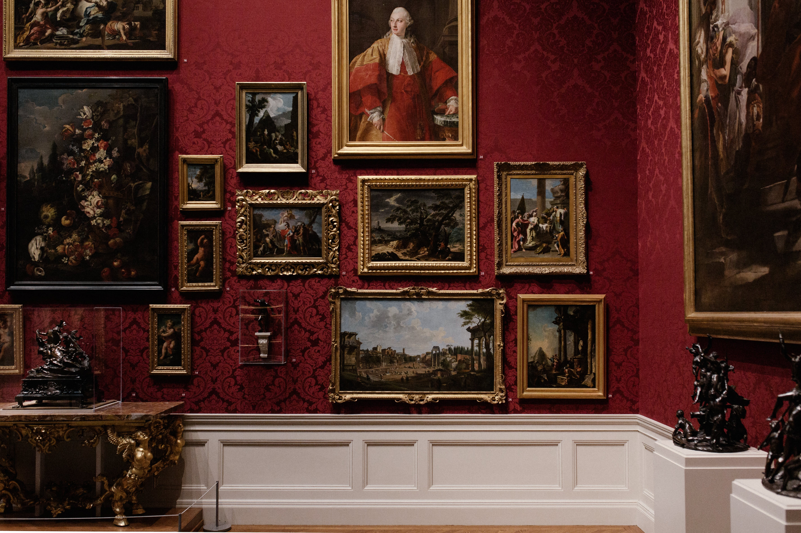
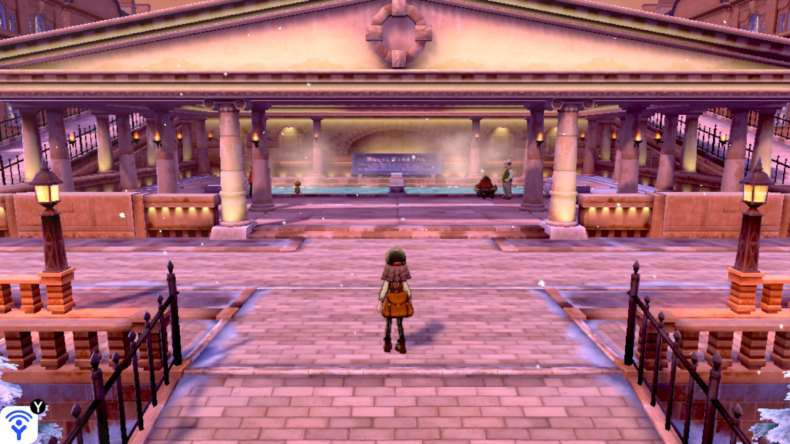

In the heart of London town, the boys possess an undeniable charm that echoes through
the city's bustling streets. Just like the lyrics in Taylor Swift's "London Boy," these
charismatic lads effortlessly blend British wit with a dash of playful mischief.
The allure of a London boy lies in his ability to navigate the city's rich history and
modern vibrancy with equal ease. Whether strolling along the Thames, enjoying a pint
in a traditional pub, or dancing the night away in one of London's trendy clubs, these boys
embody the spirit of a city that seamlessly fuses tradition and trendiness. So, when the chorus of
"London Boy" plays in the background, it's not just a song – it's a celebration of the magnetic
appeal that makes London boys truly unforgettable.
Here is "London Boy" By Taylor Swift, Enjoy!! -->
Immerse yourself in the vastness of human history at the British Museum.
With a treasure trove of artifacts from every corner of the globe,
this cultural gem showcases the evolution of civilizations.
Explore the Rosetta Stone, marvel at Egyptian mummies,
and delve into the museum's captivating exhibitions.

For Potterheads, the visit to Edinburgh Castle becomes a pilgrimage of sorts
– a chance to walk in the footsteps of J.K. Rowling and immerse oneself in
the magic that inspired her literary masterpiece. As I marveled at the castle's
architecture and soaked in the panoramic views of Edinburgh, I couldn't help
but feel a sense of gratitude for the enchanting blend of history and fantasy
that makes this Scottish landmark a must-visit for wizards and Muggles alike.

The Roman Baths in Bath, UK, are a remarkable archaeological site showcasing
the ancient bathing and socializing practices of the Romans. The well-preserved ruins,
including the Great Bath and various chambers, offer a tangible link to the past,
allowing visitors to step into the footsteps of those who once sought relaxation in these
historic waters. Surrounded by the charming city of Bath, this site provides a brief
yet immersive journey into the rich history of Roman Britain. Also at one Pokemon game
Pokemon Sword and Sheild, they take refrence of the Roman Bath and add it in the game.